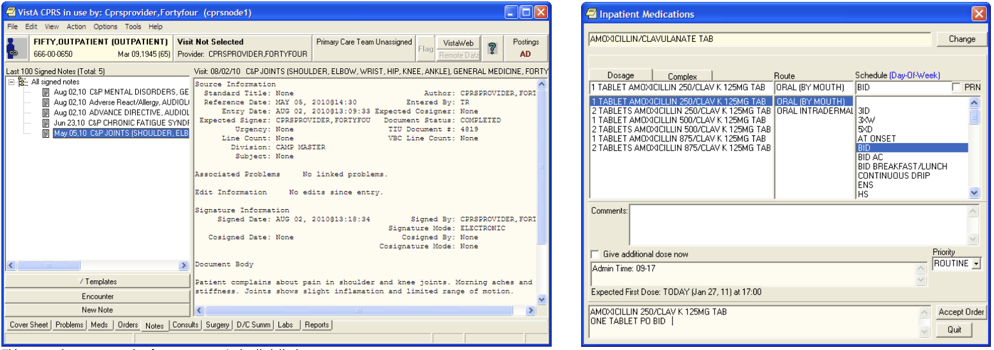
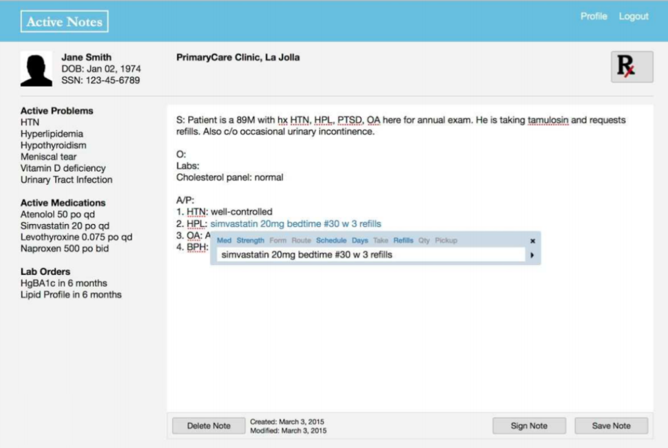

Usability Study
The US Department of Veterans Affairs (VA) had been using the same Electronic Medical Record (EMR) for decades and what had once been hailed as a break-through technology had become a legacy system that was difficult to manage and use.
Screenshots from the VA's EMR user manual showing how to edit a patient note and place medication orders.
As part of their EMR modernization efforts, the VA asked the Veterans Medical Research Foundation to explore new ways of interacting with medical records. I partnered with the Foundation to study one aspect of their redesign: free-text order entry. Whereas clincians currently have to document medication orders in a progress note, and then separately place the order in a order-entry window, the Foundation had created a prototype note editor that let clinicians document and place orders at the same time using a search window in their clinical notes that supported auto-completion and free-text parsing.
The Foundation wanted to know: How might clinicians use such free-text order entry?
Developers at the Foundation had designed and built the ActiveNotes system by the time I joined the project and wanted to develop it further before testing it. I advocated for, designed, and ran a usability study to help them test their assumptions about the usability and desirability of free-text order entry using their current prototype.
The ActiveNotes prototype supporting free-text medication order entry. Clinicans can access a search box while writing their note that lets them simultaneously document and place medication orders.
First, I helped the team identify the kinds of information they needed to support the next round of development. We knew the system was still buggy, so I helped them focus on information that would help them decide whether the project was promising, or should be scrapped. Better to get data now than spend even more time developing more than an MVP. I focused the study on identifying the feasability of implementing a more robust system (i.e., how diverse was the clinical shorthand that the tool would have to recognize, and what functionality was lacking from the clinicians' point of view) as well as the desirability of the tool. Working with clinicians on the Foundation's team, I designed two clinically-realistic tasks that involved writing a progress note for a patient and placing four medication orders.
Using connections at the local VA hospital, I worked with the team to recruit eight clinicians to participate in the study. After demonstrating the system to each clinician, I asked them to complete the two study tasks and provided minimal assistance, even when they asked for it. This enabled my research assistants and me to observe how the clinicians expected to use the system and what shorthand they naturally used to place orders. Using follow-up questions, I was able to get data on functionality that felt lacking and whether free-text order-entry addressed a current need.
Despite the bugs in ActiveNotes, clinicians were overwhelming positive about the tools' potential to save them time and energy. By pushing the team to run a usability study before they felt ready, I helped them get data on the feasability of implementing their system further and focus their development effort. In the end the VA decided to stop trying to renovate their existing EMR and purchase an existing product.